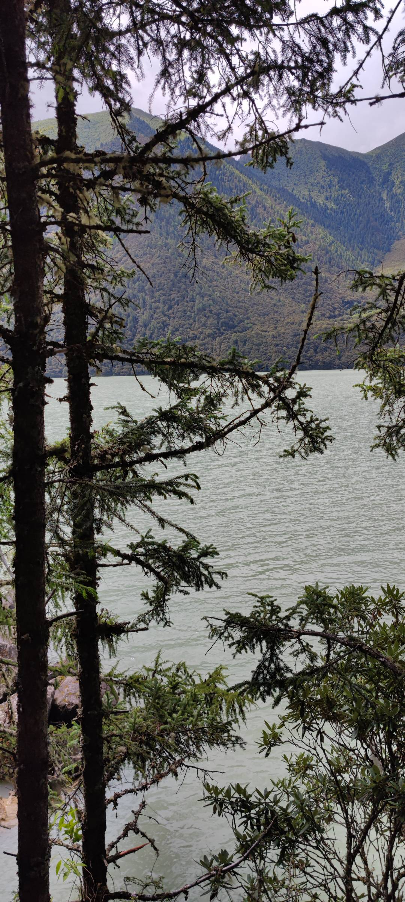

旅行回忆
-
和白色藏獒的合影
-
骑马和射箭
-
篝火晚会跳舞
风景欣赏
-
瀑布高约20米，周身绕着白云，如同一群猛虎，突然惊醒，咆哮着冲下山岗，雄威响若雷奔走，猛涌波如雪卷颠。
-
一条彩虹出现在碧蓝碧蓝的天空，赤橙黄绿青蓝紫，各种颜色交织在一起，相映生辉，像一座金桥，气势雄伟地横卧天空，天空是蓝的，万里晴空，一片湛蓝那种蓝是浅浅的，就像是块蓝水晶。
- 
这是一湾清澈的湖水，湖面水平如镜，倒映着蓝天白云、青山绿树，一切美不胜收，好似一块天然的翡翠，不断地向四周散发自己的光泽和魅力。
著名景点

布达拉宫起建于山腰，大面积的石壁又屹立如峭壁，使建筑仿佛与山岗融为一体，气势雄伟。
-
羊卓雍措，简称羊湖，藏语意为'碧玉湖'，是西藏三大圣湖之一。
-
巴松措又名错高湖，藏语中是'绿色的水'的意思，是红教的一处著名圣地。